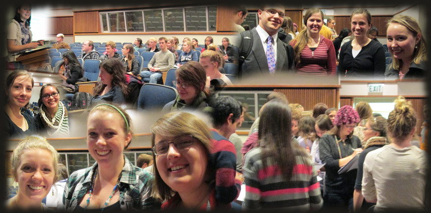

~ All majors welcome ~

About Us
The mission of the Women in Computer Science club is to empower women to succeed in the field of computer science. Our aims include:
- Making women aware of opportunities specific to women such as internships, scholarships, and conferences
- Providing mentoring and a network of support for upper and lower classmen
- Making women feel welcome in the Computer Science department
- Increasing the number of women in technical majors including computer science, computer engineering, and information technology
We want to provide women with information about careers, strengthen their confidence in their technical skills, and help them develop friendships with other students facing similar challenges.
Join the Mailing List
Join the mailing list for information about events and opportunities here.